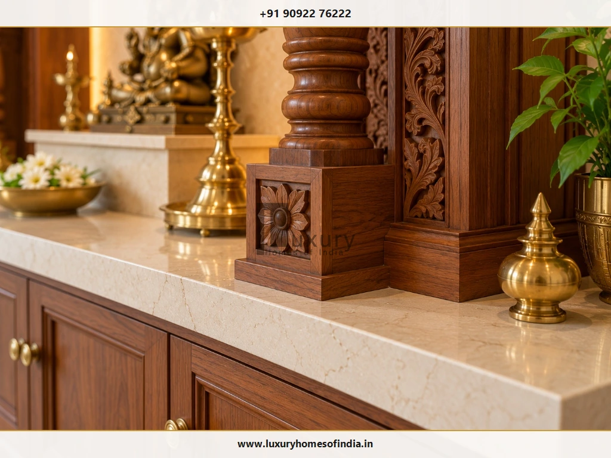
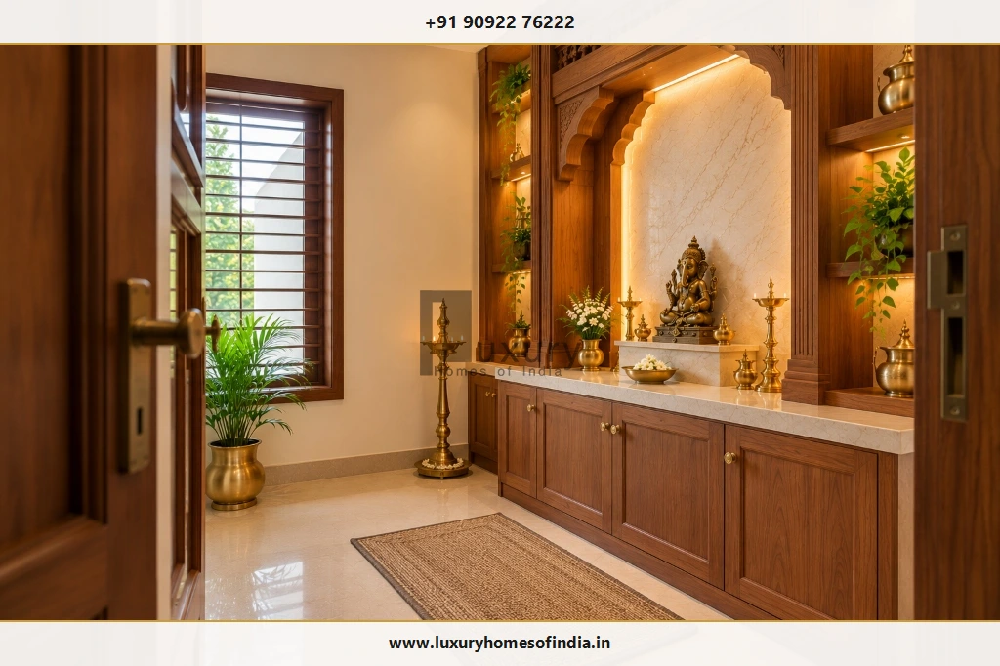
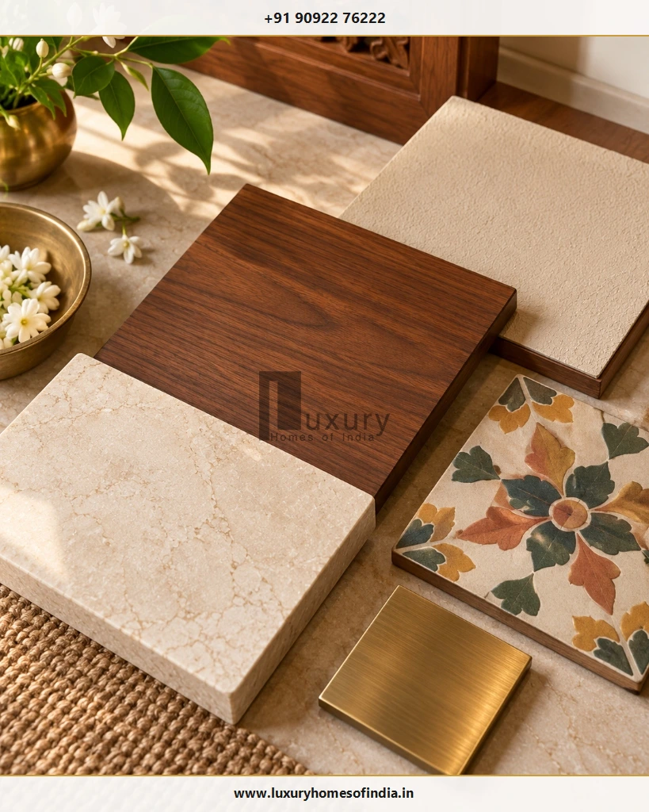
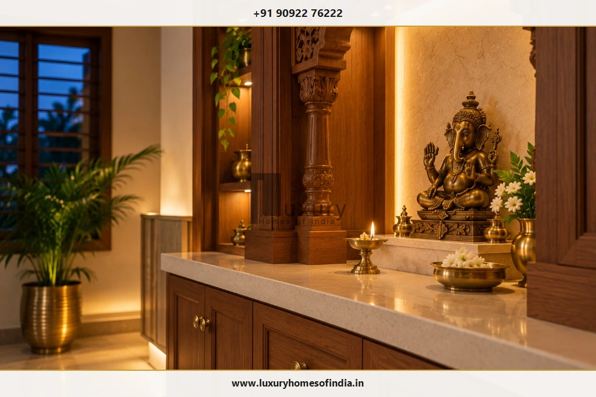

Luxury Villa Pooja Room Design in Chennai: Materials, Layouts and Timeless Ideas
A luxury villa pooja room should balance devotional traditions, architectural character, and everyday practicality. Discover how to plan spacious layouts, specify resilient natural materials, integrate serene illumination, observe Vastu guidelines, and craft an enduring sanctuary that feels naturally connected to the home.

Executive Summary: Sacred Luxury for Chennai Villas
Designing a prayer sanctuary in a luxury villa in Chennai is an exercise in restraint, classical proportions, and enduring material choices. Unlike compact apartment mandirs constrained by tight floor plans, an independent villa allows homeowners to craft a tranquil, acoustically private pavilion. True luxury is not expressed through an overabundance of gilded ornamentation, but through exquisite craftsmanship, harmonious stone-and-timber joinery, safe diya placement, and climate-conscious ventilation.
- Proportion Over Ornament: Altar dimensions tailored to ceiling volume and seating ergonomics.
- Material Resilience: Kiln-dried teakwood, sealed Makrana marble, and brushed brass.
- Layered Illumination: Concealed 2700K warm LED coves with glare-free idol spotlights.
- Safety & Airflow: Dedicated smoke exhaust pathways and non-combustible altar counters.
Table of Contents
1. What Makes a Luxury Villa Pooja Room Work?
A dedicated prayer room in a luxury residence is most successful when it is designed around the household's actual devotional practices rather than treated as a decorative showroom installation. Its spatial layout should support daily morning worship, seated meditation (dhyana), festive family gatherings, and effortless maintenance over decades of use.
Six essential architectural decisions define an enduring villa pooja room:
Altar Proportions
The mandir must correspond proportionally to ceiling height, room width, and devotee clearances without overwhelming circulation.
Material Coordination
Fine timbers, natural stones, flooring slabs, and metallic trims should form a cohesive, calming architectural dialogue.
Layered Illumination
Ambient cove lighting and glare-free task spots highlight sacred craftsmanship without distracting reflection.
Concealed Storage
Dedicated compartments for prayer books, oil cans, wicks, and festival brass thalis keep altar surfaces immaculate.
Flame & Smoke Safety
Safe physical clearance between diya flames, electrical conduits, and timber elements, backed by mechanical exhaust.
Long-Term Upkeep
Accessible LED transformers, sealed stone platforms, and smooth joinery profiles ensure trouble-free daily cleaning.
2. Six Luxury Pooja Room Design Ideas for Villas
A luxury villa provides the architectural canvas to interpret sacred spaces in varied vernaculars. Below are six proven design typologies tailored for Chennai homes:

1. Bespoke Wooden Mandir
A custom wooden mandir suits homeowners who cherish the gravitas of traditional craftsmanship and the warm tactile presence of timber. A sculpted frame, fluted pilasters, an ornamental arched backdrop, and integrated lower drawers give the altar commanding spiritual dignity. Focus hand-carved detailing around the sanctum sanctorum rather than covering every adjacent wall.
2. Marble or Natural-Stone Backdrop
Natural stone establishes a serene, enduring setting for sacred idols. Slabs of Makrana white marble, bookmatched Statuario, or backlit translucent honey onyx create an ethereal focal wall. Examine physical slab veining and porosity beforehand to ensure appropriate stain resistance.
3. Contemporary Minimalist Prayer Room
For modern villas, a contemporary pooja room unites clean geometric cabinetry, a floating stone altar, subtle fluted wall paneling, and concealed warm lighting. A muted palette of ivory, beige, and natural walnut seamlessly extends the villa's modern interior language.
4. Temple-Inspired Traditional Interior
Drawing inspiration from South Indian temple architecture, this format incorporates a Dravidian gopuram roof profile, heavy cast brass hanging bells, carved threshold frames, and granite pedestals. One prominent architectural feature anchors the room without cluttering the walking area.
5. Glass-Partitioned Prayer Space
In open-plan villa layouts, fluted or toughened acoustic glass partitions visually connect the prayer space with double-height living areas or private courtyards while preserving quiet reverence. Ensure dedicated mechanical exhaust is installed so smoke does not become trapped within the glass enclosure.
6. Heritage-Inspired Chettinad Room
Inspired by the grand merchant mansions of Tamil Nadu, this typology pairs dark seasoned teakwood with authentic handmade Athangudi floor tiles, brass kuthuvilakku lamps, and lime-plastered walls. For comprehensive styling insights, read our dedicated guide on Chettinad-Style Pooja Room Design.
| Villa Pooja Format | Primary Materials | Aesthetic Character | Key Structural Advantage |
|---|---|---|---|
| Bespoke Wooden Mandir | CP Teak, Burma Teak, Brass Inlays | Classical, warm, artisanal | Modular joinery with integrated lower drawer storage. |
| Backlit Stone Backdrop | Makrana Marble, Honey Onyx, Quartz | Luminous, monumental, serene | Non-combustible surface with continuous indirect glow. |
| Contemporary Minimalist | Fluted Walnut, Microcement, Brass | Clean-lined, modern, understated | Flush cabinetry that conceals clutter entirely. |
| Temple-Inspired Traditional | Carved Granite, Teak, Cast Bronze | Authentic Dravidian temple gravitas | Permanent stone pedestals suited for daily abhishekam. |
| Glass-Partitioned Pavilion | Toughened Fluted Glass, Metal Frame | Open, luminous, visually integrated | Allows daylight penetration while dampening domestic noise. |
| Chettinad Heritage Room | Aged Teak, Athangudi Tiles, Brass | Regional Tamil heritage, tactile | Cool under barefoot devotees; distinct cultural identity. |
3. Planning the Pooja Room During Villa Construction
A luxury prayer room should be coordinated with the architectural layout before structural slab casting and interior fit-out begin. Early coordination prevents costly compromises between structural columns, drainage lines, electrical conduits, and sacred orientations.

Choose a Suitable Location
Examine the complete floor plan in relation to adjacent living areas, formal dining halls, guest bedrooms, and vertical circulation. Ensure the pooja room does not share a wall with a bathroom, sit directly beneath an upper-floor toilet, or border a noisy utility area. For family convenience, placing the pooja room on the ground floor ensures effortless access for elder family members.
Establish Altar and Room Dimensions
Design around actual worship requirements rather than arbitrary square footage:
- Altar Depth & Height: Allow 24 to 30 inches of altar depth and an elevation of 18 to 22 inches for seated worship (or 32 to 36 inches for standing prayers).
- Devotee Clearance: Reserve a minimum of 48 to 60 inches of clear floor area in front of the altar so family members can sit comfortably during homams and festivals.
- Doorway Clearance: Ensure double entrance shutters swing inward cleanly without colliding with standing oil lamps or low storage drawers.
Coordinate Lighting, Ventilation, and Structural Loads
Conceal conduit boxes for cove lighting, LED drivers, and ceiling fans before plastering. If heavy natural stone slabs or solid timber mandirs exceeding 300 kg are specified, verify floor slab reinforcement and chemical wall anchoring with your structural engineer.
4. Materials for Chennai Villa Pooja Rooms
Chennai's coastal climate requires material specifications that withstand high relative humidity, ambient heat, and ritual exposure to water, milk, and oils.

Wood and Veneers
Solid seasoned teakwood (CP Teak, Nilambur, or Burma Teak) remains unmatched for handcrafted architectural mandirs due to its natural silica content and oil resistance. For structural cabinetry carcasses, specify BWP (Boiling Water Proof) marine-grade plywood (IS 710) lined with premium natural wood veneers to prevent warping.
Marble and Natural Stone
Makrana white marble, Statuario, and quartz provide refined, hygienic surfaces. Because natural marbles are porous, apply penetrating fluoropolymer stone sealers biannually to prevent deep staining from turmeric (manjal), vermilion (kumkum), and ghee.
Brass and Architectural Metals
Cast brass temple bells, drawer knobs, threshold strips, and kuthuvilakku lamps introduce classical warmth. Insist on factory-lacquered or PVD-coated brass trims to prevent rapid oxidation and green tarnishing in Chennai's saline coastal air.
5. Lighting a Luxury Pooja Room
Lighting in a sacred sanctuary should evoke contemplation and calm reverence rather than clinical glare:

Concealed LED Coves
Indirect warm white illumination (2700K – 3000K) concealed within ceiling coves and behind altar backdrops creates a gentle, halo-like ambient glow.
Focused Idol Spotlights
High-CRI (90+) narrow-beam ceiling spotlights illuminate consecrated bronze or stone deities without creating distracting specular glare.
Diya Flame & Smoke Safety Rule
Always place traditional oil lamps and camphor burners on heat-resistant stone counters or brass platters. Maintain at least 18 inches (450 mm) of clearance from overhead timber carvings, curtains, and electrical wiring. Integrate an acoustic inline exhaust fan to evacuate smoke freely.
6. Colour Palettes That Complement the Home
A refined prayer room avoids visual cacophony. A disciplined, cohesive palette allows sacred idols and artisanal textures to command attention:
Makrana marble floors, off-white lime-plastered walls, and subtle brass trims. Luminous and timeless.
Rich American walnut millwork paired with warm cream stone surfaces and antique brass hardware.
Travertine wall cladding, fluted oak cabinetry, and brushed gold metallic inlays for a transitional aesthetic.
7. Vastu Considerations and Family Preferences
Vastu Shastra provides time-honored recommendations for spatial balance. In an independent villa, directional alignment can be executed with precision:
- Auspicious Orientation: The North-East (Ishanya) corner is traditionally preferred. East and North alignments are also widely accepted.
- Devotee Orientation: Devotees should ideally face East or North while chanting or performing prayers.
- Sanitary Separation: Ensure no shared walls with bathrooms or toilets, and never place the pooja room beneath an upper-floor washroom.
- Elevated Threshold: An authentic wooden threshold demarcates the sanctum sanctorum and retains serene energy.
For comprehensive Vastu analysis, read our architectural guide on Pooja Room Placement as per Vastu.
8. Storage and Daily Functionality
A serene pooja room requires disciplined functional storage to keep ritual clutter away from sacred surfaces:
Soft-Close Altar Drawers
Equip lower drawers with Blum or Hettich slides and washable stainless-steel liners for wicks, camphor, and matches.
Holy Scripture Cupboards
Dust-free upper cabinets with fluted glass doors safeguard sacred texts (Gita, Vedas, Stotras) respectfully above floor level.
Pull-Out Prasadam Ledges
Conceal heavy-duty pull-out marble or teakwood ledges directly beneath the altar counter to hold heavy brass offering thalis.
Ventilated Oil Compartments
A dedicated lower cabinet with removable quartz spill trays isolates sesame and ghee containers cleanly from dry prayer articles.
9. Common Mistakes to Avoid
Over-Ornamentation
Cluttering every surface with carving, gilding, and patterned stone creates sensory exhaustion. Let one heroic element anchor the room.
Uncoordinated Material Finishes
Selecting woods and stones from catalogs without physical sample mockups leads to jarring undertone clashes under artificial lighting.
Overlooking Smoke Ventilation
Failing to install mechanical exhaust causes oil fumes and sambrani soot to deposit permanently on expensive teakwood and marble.
Inaccessible LED Drivers
Sealing LED power transformers behind fixed stone or wood paneling requires destructive demolition when a driver inevitably fails.
10. What Determines the Cost of a Bespoke Pooja Room?
The investment required for a luxury villa pooja room in Chennai reflects dimensions, material authenticity, artisanal carving complexity, and specialized MEP coordination:
₹2.5L – ₹5.5L
High-end built-in prayer niche or alcove (25 to 40 sq ft).
- • Marine ply with natural teak veneer
- • Composite quartz or Indian marble altar
- • Concealed warm LED backlighting
- • Premium soft-close lower cabinetry
₹6.0L – ₹14L
Dedicated prayer room (50 to 90 sq ft) in luxury Chennai villas.
- • Hand-carved CP Teak pillars & arches
- • Makrana white marble altar & flooring
- • Full-height storage with PVD brass hardware
- • Dimmable LED lighting & exhaust fan
₹15L – ₹35L+
Monumental temple pavilion in high-end estates and bungalows.
- • Sculpted solid Burma Teak sanctum
- • Backlit Italian onyx or Statuario slabs
- • Cast brass gates & threshold inlays
- • Smart home automation & ducted ventilation
Itemized Quotation Standard
Always insist on an itemized Bill of Quantities (BOQ) that explicitly documents timber species, marble slab thickness, hardware brands, electrical fittings, and warranty terms rather than accepting ambiguous lump-sum contractor estimates.
11. Pre-Construction Architectural Checklist
Review this 10-point checklist with your architect, interior designer, or turnkey builder before fabrication:
| # | Milestone Check | Verification Action | Sign-Off |
|---|---|---|---|
| 1 | Spatial Orientation | Verify North-East (Ishanya), East, or North placement on structural layout. | |
| 2 | Altar & Idol Sizing | Confirm altar platform depth and step heights accommodate all consecrated idols. | |
| 3 | Physical Sample Review | Review timber veneers, marble slabs, and brass finishes together under 3000K light. | |
| 4 | Concealed Electricals | Mark conduit runs, switch heights, and ventilated LED driver access panels. | |
| 5 | Flame & Smoke Exhaust | Ensure 18-inch clearance from diya flames and install dedicated exhaust ducting. | |
| 6 | Dedicated Storage | Incorporate spill-proof oil drawers, puja utensil ledges, and scripture cupboards. | |
| 7 | Doorway Clearances | Verify entrance shutters open inward smoothly without clashing with furniture. | |
| 8 | Structural Load Checks | Confirm slab capacity and chemical anchor bolt specs for heavy stone altars. | |
| 9 | Maintenance Access | Ensure light fixtures and high shelves can be cleaned without dismantling joinery. | |
| 10 | Itemized Quotation | Verify contractor quotation specifies materials, hardware brands, and exclusions. |
Frequently Asked Questions
Design Your Luxury Villa Pooja Sanctuary
A thoughtfully designed villa pooja room brings together family traditions, architectural proportion, and practical detailing. Whether you envision a carved teakwood mandir, a luminous stone backdrop, or a contemporary prayer space, early architectural coordination ensures flawless execution.
Luxury Homes of India (LHI) specializes in bespoke architectural planning, turnkey villa construction, and luxury interior execution across Chennai and Tamil Nadu. Contact our principal architects to discuss your custom residence.